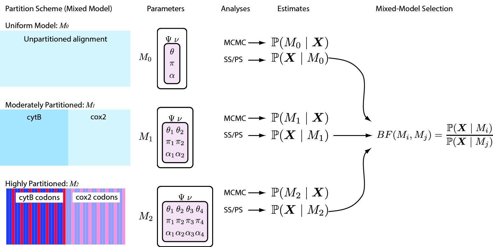

This tutorial provides the second protocol from our recent publication (Höhna et al. 2017). The first protocol is described in the Substitution model tutorial and the third protocol is described in the Model selection of common substitution models for one locus.
This tutorial demonstrates how to accommodate variation in the substitution process across sites of an alignment. In the preceding tutorials, we assumed that all sites in an alignment evolved under an identical substitution process. This assumption is likely to be violated biologically, since different nucleotide sites are subject to different selection pressures, such as depending on which gene or codon position the site belongs to. Here, we will demonstrate how to specify—and select among—alternative data partition schemes using ‘RevBayes‘. This is commonly referred to as partitioned-data analysis, where two or more subsets of sites in our alignment are assumed to evolve under distinct processes.
This tutorial will construct three multi-gene models. The first model, Partition_uniform, assumes all genes evolve under the same process parameters. The second model, Partition_gene, assumes all genes evolve according to the same process, but each gene has it’s own set of process parameters. The third model, Partition_codon, partitions the data not only by gene, but also by codon position. Each analysis will generate a maximum a posteriori tree to summarize the inferred phylogeny. An advanced exercise introduces how to compute Bayes factors to select across various partitioning schemes.
All of the files for this analysis are provided for you and you can run these without significant effort using the ‘source()‘ function in the ‘RevBayes‘ console, e.g.,
source("scripts/mcmc_Partition_uniform.Rev")
If everything loaded properly, then you should see the program begin running the Markov chain Monte Carlo analysis needed for estimating the posterior distribution. If you continue to let this run, then you will see it output the states of the Markov chain once the MCMC analysis begins.
Variation in the evolutionary process across the sites of nucleotide sequence alignments is well established, and is an increasingly pervasive feature of datasets composed of gene regions sampled from multiple loci and/or different genomes. Inference of phylogeny from these data demands that we adequately model the underlying process heterogeneity; failure to do so can lead to biased estimates of phylogeny and other parameters (Brown and Lemmon 2007).
Accounting for process heterogeneity involves adopting a partitioned data approach (sometimes also called a ‘mixed-model’ approach (Ronquist and Huelsenbeck 2003)), in which the sequence alignment is first parsed into a number of data subsets that are intended to capture plausible process heterogeneity within the data. The determination of the partitioning scheme is guided by biological considerations regarding the dataset at hand. For example, we might wish to evaluate possible variation in the evolutionary process within a single gene region (e.g., between stem and loop regions of ribosomal sequences), or among gene regions in a concatenated alignment (e.g., comprising multiple nuclear loci and/or gene regions sampled from different genomes). The choice of partitioning scheme is up to the investigator and many possible partitions might be considered for a typical dataset.
In this exercise, we assume that each data subset evolved under an independent general-time reversible model with gamma-distributed rates across sites (GTR+$\Gamma$). Under this model the observed data are conditionally dependent on the exchangeability rates ($\theta$), stationary base frequencies ($\pi$), and the degree of gamma-distributed among-site rate variation ($\alpha$), as well as the rooted tree ($\Psi$) and branch lengths. When we assume different GTR+$\Gamma$ models for each data subset, this results in a composite model, in which all sites are assumed to share a common, rooted tree topology and proportional branch lengths, but subsets of sites are assumed to have independent substitution model parameters. Finally, we perform a separate MCMC simulation to approximate the joint posterior probability density of the phylogeny and other parameters.
For most sequence alignments, several (possibly many) partition schemes of varying complexity are plausible a priori, which therefore requires a way to objectively identify the partition scheme that balances estimation bias and error variance associated with under- and over-parameterized mixed models, respectively. Increasingly, partition-model selection is based on Bayes factors [e.g., @Suchard2001], which involves first calculating the marginal likelihood under each candidate partition scheme and then comparing the ratio of the marginal likelihoods for the set of candidate partition schemes (missing reference). The analysis pipeline that we will use in this tutorial is depicted in Figure [fig:pipeline].
 The analysis pipeline for Exercise 1. We will explore three partition schemes for the primates dataset.The first model (the ‘uniform model’, $M_0$) assumes that all sites evolved under a common GTR+$\Gamma$ substitution model.The second model (the ‘moderately partitioned’ model, $M_1$) invokes two data subsets corresponding to the two gene regions (cytB and cox2), and assumes each subset of sites evolved under an independent GTR+$\Gamma$ model.The final partition model (the ‘highly partitioned’ model, $M_2$) invokes four data subsets—the first two subsets corresponds to the cytB gene region, where the first and second codon position sites are combined into one subset distinct from the third codon position sites, and the cox2 gene has two subsets of its own, partitioned by codon positions in the same way—and each data subset is assumed evolved under an independent GTR+$\Gamma$ substitution model.Note that we assume that all sites share a common tree topology, $\Psi$, and branch-length proportions, for each of the candidate partition schemes.We perform two separate sets of analyses for each partition model—a MCMC simulation to approximate the joint posterior probability density of the partition-model parameters, and a ‘power-posterior’ MCMC simulation to approximate the marginal likelihood for each mixed model.The resulting marginal-likelihood estimates are then evaluated using Bayes factors to assess the fit of the data to the three candidate partition models.
Our first exercise is to construct a multi-gene analysis where all genes evolve under the same process and parameters.
To begin, load in the sequences using the ‘readDiscreteCharacterData()‘ function.
data_cox2 = readDiscreteCharacterData("data/primates_and_galeopterus_cox2.nex")
data_cytb = readDiscreteCharacterData("data/primates_and_galeopterus_cytb.nex")
Since the first step in this exercise is to assume a single model across genes, we need to combine the two datasets using concatenate()
data = concatenate( data_cox2, data_cytb )
Typing ‘data‘ reports the dimensions of the concatenated matrix, this provides information about the alignment:
DNA character matrix with 23 taxa and 1852 characters
=====================================================
Origination: primates_and_galeopterus_cox2.nex
Number of taxa: 23
Number of included taxa: 23
Number of characters: 1852
Number of included characters: 1852
Datatype: DNA
For later use, we will store the taxon information (‘taxa‘) and the number of taxa and branches.
num_species <- data.ntaxa()
num_branches <- 2 * num_species - 3
taxa <- data.taxa()
Additionally, we will create some move and monitor index variables to create our move and monitor vectors.
mvi = 1
mni = 1
Now we can proceed with building our GTR$+\Gamma$ model. First, we will define and specify a prior on the exchangeability rates of the GTR model
er_prior <- v(1,1,1,1,1,1)
er ~ dnDirichlet( er_prior )
and assign its moves
moves[mvi++] = mvBetaSimplex(er, alpha=10, tune=true, weight=3)
moves[mvi++] = mvDirichletSimplex(er, alpha=10.0, tune=true, weight=1.0)
We can use the same type of distribution as a prior on the 4 stationary frequencies ($\pi_A, \pi_C, \pi_G, \pi_T$) since these parameters also represent proportions. Specify a flat Dirichlet prior density on the base frequencies:
pi_prior <- v(1,1,1,1)
pi ~ dnDirichlet( pi_prior )
Now add the simplex scale move on the stationary frequencies to the moves vector
moves[mvi++] = mvBetaSimplex(pi, alpha=10, tune=true, weight=2)
moves[mvi++] = mvDirichletSimplex(pi, alpha=10.0, tune=true, weight=1.0)
We can finish setting up this part of the model by creating a deterministic node for the GTR rate matrix ‘Q‘. The ‘fnGTR()‘ function takes a set of exchangeability rates and a set of base frequencies to compute the rate matrix used when calculating the likelihood of our model.
Q := fnGTR(er,pi)
We will also assume that the substitution rates vary among sites according to an one-parametric gamma distribution, i.e., where the shape equals the rate ($\alpha=\beta$) and thus with mean 1.0 (Yang 1994). Since we do not have good prior knowledge about the variance in site rates, we apply a uniform distribution between $1$ and $10^8$. Then create a stochastic node called ‘alpha‘ with a uniform prior:
alpha ~ dnUniform( 0, 1E8 )
The way the ASRV model is implemented involves discretizing the mean-one gamma distribution into a set number of rate categories. Thus, we can analytically marginalize over the uncertainty in the rate at each site. To do this, we need a deterministic node that is a vector of rates calculated from the gamma distribution and the number of rate categories. The ‘fnDiscretizeGamma()‘ function returns this deterministic node and takes three arguments: the shape and rate of the gamma distribution and the number of categories. Since we want to discretize a mean-one gamma distribution, we can pass in ‘alpha‘ for both the shape and rate.
Initialize the ‘gamma_rates‘ deterministic node vector using the ‘fnDiscretizeGamma()‘ function with ‘4‘ bins:
gamma_rates := fnDiscretizeGamma( alpha, alpha, 4, false )
The random variable that controls the rate variation is the stochastic node ‘alpha‘. This variable is a single, real positive value (‘RevType = RealPos‘). We will apply a simple scale move to this parameter. The scale move’s tuning parameter is called ‘lambda‘ and this value dictates the size of the proposal.
moves[mvi++] = mvScale(alpha, lambda=0.1, tune=false, weight=4.0)
Invariant sites (sites that remain fixed throughout their evolutionary history) may be seen as an extreme case of among-site rate variation. In contrast to $+ \Gamma$ models, the $+I$ model allows site some probability of having substitution rate equal to zero. Here, we give the probability of a site being invariant with ‘pinvar‘
pinvar ~ dnBeta(1,1)
moves[mvi++] = mvScale(pinvar, lambda=0.1, tune=false, weight=2.0)
moves[mvi++] = mvSlide(pinvar, delta=10.0, tune=false, weight=2.0)
The tree topology and branch lengths are also stochastic nodes in our model. For simplicity, we will use the same prior distribution on the tree topology, a uniform topology prior, and branch lengths, independent exponential prior distributions, as done in the substitution model tutorial.
We will assume that all possible labeled, unrooted tree topologies have
equal probability. This is the ‘dnUniformTopology()‘ distribution in
‘RevBayes‘. Note that in ‘RevBayes‘ it is advisable to specify the
outgroup for your study system if you use an unrooted tree prior,
whereas other software, e.g.,MrBayes uses the first
taxon in the data matrix file as the outgroup. Specify the ‘topology‘
stochastic node by passing in the tip labels ‘names‘ to the
‘dnUniformTopology()‘ distribution:
out_group = clade("Galeopterus_variegatus")
topology ~ dnUniformTopology(taxa, outgroup=out_group)
To update the unrooted tree topology, we can use both a nearest-neighbor interchange move (‘mvNNI‘) and a subtree-prune and regrafting move (‘mvSPR‘). These moves do not have tuning parameters associated with them, thus you only need to pass in the ‘topology‘ node and proposal ‘weight‘.
moves[mvi++] = mvNNI(topology, weight=1.0)
moves[mvi++] = mvSPR(topology, weight=1.0)
The weight specifies how often the move will be applied either on average per iteration or relative to all other moves. Have a look at the MCMC Diagnosis tutorial for more details about moves and MCMC strategies.
Next we have to create a stochastic node for each of the $2N-3$ branches in our tree (where $N=$ ‘n_species‘). We can do this using a ‘for‘ loop — this is a plate in our graphical model. In this loop, we can create each of the branch-length nodes and assign each move. Copy this entire block of ‘Rev‘ code into the console:
for (i in 1:num_branches) {
br_lens[i] ~ dnExponential(10.0)
moves[mvi++] = mvScale(br_lens[i])
}
It is convenient for monitoring purposes to add the tree length as deterministic variable. The tree length is simply the sum of all branch lengths. . Accordingly, the tree length can be computed using the ‘sum()‘ function, which calculates the sum of any vector of values.
TL := sum(br_lens)
Finally, we can create a phylogram (a phylogeny in which the branch lengths are proportional to the expected number of substitutions/site) by combining the tree topology and branch lengths. We do this using the ‘treeAssembly()‘ function, which applies the value of the $i^{th}$ member of the ‘br_lens‘ vector to the branch leading to the $i^{th}$ node in ‘topology‘. Thus, the ‘psi‘ variable is a deterministic node:
psi := fnTreeAssembly(topology, br_lens)
We now have all the parameters needed to model the phylogenetic molecular substitution process
seq ~ dnPhyloCTMC(tree=psi, Q=Q, siteRates=gamma_rates, pInv=pinvar, type="DNA")
To compute the likelihood, we condition the process on the data observed at the tips of the tree
seq.clamp(data)
Since the model is now specified, we wrap the components in a Model object.
my_model = model(Q)
For our MCMC analysis we need to set up a vector of monitors to save the states of our Markov chain. The monitor functions are all called ‘mn*‘, where ‘*‘ is the wildcard representing the monitor type. First, we will initialize the model monitor using the ‘mnModel‘ function. This creates a new monitor variable that will output the states for all model parameters when passed into a MCMC function.
monitors[mni++] = mnModel(filename="output/PS_uniform.log",printgen=10)
The ‘mnFile‘ monitor will record the states for only the parameters passed in as arguments. We use this monitor to specify the output for our sampled trees and branch lengths.
monitors[mni++] = mnFile(psi, filename="output/PS_uniform.trees", printgen=10)
Finally, create a screen monitor that will report the states of specified variables to the screen with ‘mnScreen‘:
monitors[mni++] = mnScreen(alpha, pinvar, TL, printgen=1000)
With a fully specified model, a set of monitors, and a set of moves, we can now set up the MCMC algorithm that will sample parameter values in proportion to their posterior probability. The ‘mcmc()‘ function will create our MCMC object:
mymcmc = mcmc(my_model, monitors, moves, nruns=2)
Note that this will automatically run two independent replicated MCMC simulations because we specified ‘nruns=2‘.
Now, run the MCMC:
mymcmc.run(generations=30000, tuningInterval=200)
When the analysis is complete, you will have the monitor files in your output directory.
‘RevBayes‘ can also summarize the tree samples by reading in the tree-trace file:
treetrace = readTreeTrace("output/PS_uniform.trees", treetype="non-clock")
treetrace.summarize()
The ‘mapTree()‘ function will summarize the tree samples and write the maximum a posteriori tree to file:
map_tree = mapTree(treetrace,"output/PS_uniform_map.tre")
This completes the uniform partition analysis. The next two sections will implement more complex partitioning schemes in a similar manner.
The uniform model used in the previous section assumes that all sites in the alignment evolved under the same process described by a shared tree, branch length proportions, and parameters of the GTR+$\Gamma$ substitution model. However, our alignment contains two distinct gene regions—cytB and cox2—so we may wish to explore the possibility that the substitution process differs between these two gene regions. This requires that we first specify the data partitions corresponding to these two genes, then define an independent substitution model for each data partition.
First, we’ll clear the workspace of all declared variables
clear()
Since we wish to avoid individually specifying each parameter of the GTR+$\Gamma$ model for each of our data partitions, we can loop over our datasets and create vectors of nodes. To do this, we begin by creating a vector of data file names:
filenames <- v("data/primates_and_galeopterus_cox2.nex", "data/primates_and_galeopterus_cytb.nex")
Set a variable for the number of partitions:
n_data_subsets <- filenames.size()
And create a vector of data matrices called ‘data‘:
for (i in 1:n_data_subsets){
data[i] = readDiscreteCharacterData(filenames[i])
}
Next, we can initialize some important variables. This does require, however, that both of our alignments have the same number of species and matching tip names.
taxa <- data[1].taxa()
num_species <- data[1].ntaxa()
num_branches <- 2 * num_species - 3
mvi = 1
mni = 1
We can avoid creating unique names for every node in our model if we use a ‘for‘ loop to iterate over our partitions. Thus, we will only have to type in our entire GTR+$\Gamma$ model parameters once. This will produce a vector for each of the unlinked parameters —e.g., there will be a vector of ‘alpha‘ nodes where the stochastic node for the first partition (cytB) will be ‘alpha[1]‘ and the stochastic node for the second partition (cox2) will be called ‘alpha[2]‘.
The script for the model, RevBayes_scripts/mcmc_Partition_gene.Rev, creates the model parameters for each partition in one large loop. Here, we will split the loop into smaller parts to achieve the same end.
First, we will create the GTR rate matrix for partition $i$ by first creating exchangeability rates
for (i in 1:n_data_subsets) {
er_prior[i] <- v(1,1,1,1,1,1)
er[i] ~ dnDirichlet(er_prior[i])
moves[mvi++] = mvBetaSimplex(er[i], alpha=10, tune=true, weight=3)
}
and stationary frequencies
for (i in 1:n_data_subsets) {
pi_prior[i] <- v(1,1,1,1)
pi[i] ~ dnDirichlet(pi_prior[i])
moves[mvi++] = mvBetaSimplex(pi[i], alpha=10, tune=true, weight=2)
}
then passing those parameters into a rate matrix function
for (i in 1:n_data_subsets) {
Q[i] := fnGTR(er[i],pi[i])
}
which states the rate matrix (Q[i]) for partition $i$ is determined by the exchangeability rates (er[i]) and stationary frequencies (pi[i]) also defined for partition $i$. Following this format, we construct the remaining partition parameters: the $+\Gamma$ mixture model
for (i in 1:n_data_subsets) {
alpha[i] ~ dnUniform( 0.0, 1E8 )
gamma_rates[i] := fnDiscretizeGamma( alpha[i], alpha[i], 4, false )
moves[mvi++] = mvScale(alpha[i],weight=2)
}
the $+I$ invariant sites model
for (i in 1:n_data_subsets) {
pinvar[i] ~ dnBeta(1,1)
moves[mvi++] = mvScale(pinvar[i], lambda=0.1, tune=true, weight=2.0)
moves[mvi++] = mvSlide(pinvar[i], delta=0.1, tune=true, weight=2.0)
}
and the per-partition substitution rate multipliers
# specify a rate multiplier for each partition
part_rate_mult ~ dnDirichlet( rep(1.0, n_data_subsets) )
moves[mvi++] = mvBetaSimplex(part_rate_mult, alpha=1.0, tune=true, weight=n_data_subsets)
moves[mvi++] = mvDirichletSimplex(part_rate_mult, alpha=1.0, tune=true, weight=2.0)
# note that we use here a vector multiplication,
# i.e., multiplying each element of part_rate_mult by n_data_subsets
part_rate := part_rate_mult * n_data_subsets
Different Substitution Models for each Gene
Alternatively, we might be interested in applying different substitution models for each gene independently instead of assuming the same substitution albeit with different parameters for each gene. In this two gene case this is rather simple to do by specifying the substitution model for each gene independently. For many genes this might become lengthy and you might want to write a script to generate this section (note: we may provide such scripts soon).
For simplicity and sake of demonstration, we assume that the cytochrome b region evolves under a Jukes-Cantor substitution model and the COX-II gene under an HKY substitution model. We begin with the cytochrome b gene and the Jukes-Cantor substitution model:
# specify the JC rate matrix Q[1] <- fnJC(4)Second, we specify the HKY substitution model for the COX-II gene:
pi_prior <- v(1,1,1,1) pi ~ dnDirichlet(pi_prior) # specify a move to propose updates to on pi moves[mvi++] = mvBetaSimplex(pi, weight=2) moves[mvi++] = mvDirichletSimplex(pi, weight=1) # specify a lognormal distribution as the prior distribution on kappa kappa ~ dnLognormal(0.0,1.25) # a simple scaling move to update kappa moves[mvi++] = mvScale(kappa) # Finally, create the HKY rate matrix Q[2] := fnHKY(kappa,pi)Note that we specified manually in this way our vector of rate matrices ‘Q‘. We can thus specify any substitution model manually for a given gene. We hope that this brief example conveys the idea how to specify gene-specific substitution models. You can add rate-variation among sites and/or probabilities for a site being invariant for each gene too. Finally, you can then either loop over all genes to create the ‘dnPhyloCTMC‘ distribution (see below) if the structure of the model allows it (i.e.,if all models have a variable for site-rate-variation and probabilities for invariant site), or you efficiently set these variables to default values (e.g.,‘pinvar[i]=0.0‘ if there is no probability for a site being invariant for this gene), or you create the ‘seq[i] $\sim$ dnPhyloCTMC(…)‘ manually outside a loop as well.
We assume that both genes evolve along the same tree. Hence, we need to specify a random variable for our tree parameter which is the same as was specified for mcmc_Partition_uniform.Rev.
out_group = clade("Galeopterus_variegatus")
# Prior distribution on the tree topology
topology ~ dnUniformTopology(taxa, outgroup=out_group)
moves[mvi++] = mvNNI(topology, weight=5.0)
moves[mvi++] = mvSPR(topology, weight=1.0)
# Branch length prior
for (i in 1:n_branches) {
bl[i] ~ dnExponential(10.0)
moves[mvi++] = mvScale(bl[i])
}
TL := sum(bl)
psi := treeAssembly(topology, bl)
Since we have a rate matrix and a site-rate model for each partition, we must create a phylogenetic CTMC for each gene. Additionally, we must fix the values of these nodes by attaching their respective data matrices. These two nodes are linked by the ‘psi‘ node and their log-likelihoods are added to get the likelihood of the whole DAG.
for (i in 1:n_data_subsets) {
seq[i] ~ dnPhyloCTMC(tree=psi, Q=Q[i], branchRates=part_rate_mult[i], siteRates=gamma_rates[i], pInv=pinvar[i], type="DNA")
seq[i].clamp(data[i])
}
The remaining steps should be familiar: wrap the model components in a model object
my_model = model(psi)
create the monitors
monitors[mni++] = mnModel(filename="output/PS_gene.log",printgen=10)
monitors[mni++] = mnFile(psi, filename="output/PS_gene.trees", printgen=100)
monitors[mni++] = mnScreen(TL, printgen=1000)
configure and run the MCMC analysis
mymcmc = mcmc(my_model, moves, monitors, nruns=2)
mymcmc.run(30000,tuningInterval=200)
and summarize the posterior density of trees with a MAP tree
treetrace = readTreeTrace("output/PS_gene.trees", treetype="non-clock")
treetrace.summarize()
mapTree(treetrace,"output/PS_gene_MAP.tre")
Because of the genetic code, we often find that different positions within a codon (first, second, and third) evolve at different rates. Thus, using our knowledge of biological data, we can devise a third approach that further partitions our alignment. For this exercise, we will partition sites within the cytB and cox2 gene by codon position.
clear()
data_cox2 <- readDiscreteCharacterData("data/primates_and_galeopterus_cox2.nex")
data_cytb <- readDiscreteCharacterData("data/primates_and_galeopterus_cytb.nex")
We must now add our codon-partitions to the ‘data‘ vector. The first and second elements in the data vector will describe cytB data, and the third and fourth elements will describe cox2 data. Moreover, the first and third elements will describe the evolutionary process for the first and second codon position sites, while the second and fourth elements describe the process for the third codon position sites alone.
We can create this by calling the helper function ‘setCodonPartition()‘, which is a member function of the data matrix. We are assuming that the gene is in frame, meaning the first column in your alignment is a first codon position. The ‘setCodonPartition()‘ function takes a single argument, the position of the alignment you wish to extract. It then returns every third column, starting at the index provided as an argument.
Before we can use the use the ‘setCodonPartition()‘ function, we must first populate the position in the ‘data‘ matrix with some sequences. Then we call the member function of ‘data[1]‘ to exclude all but the 1$^{st}$ and 2$^{nd}$ positions for cox2.
data[1] <- data_cox2
data[1].setCodonPartition( v(1,2) )
Assign the 3$^{rd}$ codon positions for cox2 to ‘data[2]‘:
data[2] <- data_cox2
data[2].setCodonPartition( 3 )
Then repeat for cytB, being careful to store the subsetted data to elements 3 and 4:
data[3] <- data_cytb
data[3].setCodonPartition( v(1,2) )
data[4] <- data_cytb
data[4].setCodonPartition( 3 )
Now we have a data vector containing each subset. We can then specify the independent substitution models per data subset. The remaining parts of the model are identical to the previous exercise where we partitioned by gene.
Don’t forget to rename the output files!
Reviewing posterior estimates. Open the
PS_codon.log file in Tracer. Remember
that data subsets 1 and 2 are for cox2, partitions 3 and 4 are for
cytB, subsets 1 and 3 are for sites in the first and second codon
positions (per gene), and subsets 2 and 4 are for sites in the third
and fourth codon positions (per gene).
Aside from the tree topology and branch lengths, each data subset is modeled to have its own set of parameters. However, the posterior estimates for some parameters appear quite similar between some pairs of subsets yet different between other pairs of subsets. For example, part_rate is the per-subset substitution rate. This clock is approximately one order of magnitude faster for partitions 2 and 4 (third codon position sites) than it is for subsets 1 and 3 (non-third codon position sites).
Identify other parameter-subset relationships like this in the posterior. Under this model, would you consider the gene or the codon site position to hold greater influence over the site’s evolutionary mode?
Comparison of MAP trees. Open the three inferred
MAP trees in FigTree. Check to enable “Node Labels”,
click “Display” and select “posterior” from the dropdown menu.
Internal nodes now report the probability of the clade appearing in
the posterior density of sampled trees. Do different models yield
different tree topologies? Generally, do complex models provide
higher or lower clade support?
Partitioned model selection. Bayes factors are computed as the ratio of marginal likelihoods (see the model selection using Bayes factors tutorial for more details). Rather than constructing the analysis with an mcmc object, marginal likelihood computations rely on output from a powerPosterior object.
Copy mcmc_Partition_uniform.Rev to ml_Partition_uniform.Rev. In ml_Partition_uniform.Rev, delete all lines after the model function is called, so the MCMC is never run and the MAP tree is never computed.
Instead, configure and run a power posterior analysis
pow_p = powerPosterior(mymodel, moves, monitors, "output/model_uniform.out", cats=127)
pow_p.burnin(generations=5000,tuningInterval=200)
pow_p.run(generations=2000)
then compute the marginal likelihood using the stepping stone sampler
ss = steppingStoneSampler(file="output/model_uniform.out", powerColumnName="power", likelihoodColumnName="likelihood")
ss.marginal()
and again using the path sampler
ps = pathSampler(file="model_uniform.out", powerColumnName="power", likelihoodColumnName="likelihood")
ps.marginal()